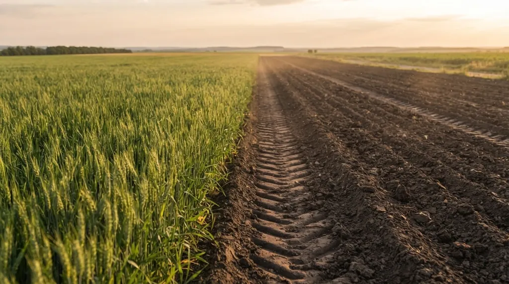

Коротко
- Сівозміна це порядок, у якому на кожному полі змінюють одна одну культури й пари. Вона працює через хвороби, бур’яни, вологу й живлення, а не через «відпочинок землі».
- На Полтавщині пшениця по пшениці дала 2,96 т/га проти 4,52 т/га після гороху, тобто майже на третину менше.
- В Україні діє постанова КМУ № 164: вона задає частки культур по регіонах і мінімальні паузи. Соняшник можна повертати не раніше ніж через 7 років, цукровий буряк, ріпак і зернобобові через 3, озиму пшеницю й картоплю через 2.
- Схему складають по кроках: поля, набір культур, місце для вимогливих культур, ланки, перевірка пауз.
- Сівозміна не замінює добрива. Вона розподіляє навантаження між полями, а баланс живлення і pH ґрунту ведуть окремо.
Що таке сівозміна
Сівозміна це не «що посієш цього року», а «що було на цьому полі і що піде після». Порядок культур і парів, який повторюється по колу, поле за полем, рік за роком.
Термінів у цій темі багато, і вони постійно плутаються. Нижче ті, без яких не обійтися далі.
| Термін | Що означає |
|---|---|
| Поле сівозміни | Ділянка, на якій за схемою щороку вирощують певну культуру. Поля роблять приблизно однакової площі, щоб щороку мати однакову частку кожної культури. |
| Ротація | Повний цикл: за цей час кожна культура побуває на кожному полі й повертається на початкове. |
| Ротаційна таблиця | План на весь цикл: яка культура на якому полі в який рік. |
| Ланка | Кілька культур, які добре йдуть одна за одною, наприклад горох і озима пшениця. З ланок збирають повну схему. |
| Попередник | Культура чи пар, що були на полі в попередньому сезоні. Те, що росло за два роки до цього, називають передпопередником. |
| Пар | Поле, яке певний час не займають товарною культурою, щоб накопичити вологу й очистити від бур’янів. Або займають лише на зелене добриво чи корм. |
| Проміжна культура | Культура, яку вирощують між двома основними, щоб поле не стояло порожнім. |
Навіщо вона потрібна: що показують досліди
Коротка відповідь така. Одна й та сама культура щороку на тому самому полі збирає свої хвороби, шкідників і бур’яни-супутники, а ґрунт віддає їй щоразу ті самі елементи з тих самих горизонтів. Сівозміна розриває цей цикл.

Тепер цифри. Полтавська державна сільськогосподарська дослідна станція три сезони порівнювала озиму пшеницю після різних попередників, при однаковому живленні N50P50K50. Після гороху на зерно вона дала в середньому 4,52 т/га, після еспарцету на один укіс 4,45, після чорного пару 4,11, а після самої пшениці 2,96 т/га. Повторний посів програв кращим попередникам на 28–34,5%. Різниться й вологозабезпечення: навесні в півтораметровому шарі було 250,9 мм доступної вологи після пару і 197,7 мм після пшениці, тобто приблизно на п’яту частину менше.
Не лише повторний посів дає втрати. У досліді в Правобережному Лісостепу пшениця після кукурудзи на силос при оранці дала 5,01 т/га, на 11,9% менше, ніж після гороху.
Якщо дивитися ширше, є огляд 11 довгострокових дослідів у США й Канаді (Bowles et al., 2020). Там, де різницю можна було довести статистично, кукурудза в найрізноманітніших ротаціях давала в середньому на 28,1% більше, ніж у простих схемах. У найпосушливіші роки різноманітність зменшувала втрати врожаю. Автори зазначають, що результат залежав від місця досліду і що за високих доз азоту ефект слабшав, але не зникав навіть при 180 кг N/га.
Звичайно, це інший клімат, і переносити відсотки на ваше поле не варто. Але напрям однаковий скрізь: добрива пом’якшують наслідки поганої схеми, а не скасовують їх.
Що кажуть норми: постанова № 164
Для ріллі в Україні діють нормативи з постанови КМУ від 11.02.2010 № 164. Вона дає дві речі: межі часток культур у структурі посівів по регіонах і мінімальні паузи до повернення культури на те саме поле.
Паузи прості й корисні для будь-якого господарства.
| Культура | Повернення на те саме поле не раніше ніж через |
|---|---|
| Озиме жито, ячмінь, овес, гречка | 1 рік |
| Пшениця озима, картопля, просо | 2 роки |
| Багаторічні бобові трави, зернобобові (крім люпину), цукровий і кормовий буряк, ріпак озимий і ярий | 3 роки |
| Льон | 5 років |
| Люпин, капуста | 6 років |
| Соняшник | 7 років |
Кукурудзу постанова дозволяє вирощувати 2–3 роки поспіль, у сівозміні або на полі, тимчасово виведеному з неї. Для сої паузу в тексті не названо. Для лікарських рослин вона залежить від виду й становить від 1 до 10 років.
Частки культур задані діапазонами по п’яти регіонах. Для найчастіше обговорюваних культур вони такі.
| Регіон | Соняшник, % посівів | Ріпак, % посівів | Чорний пар, % посівів |
|---|---|---|---|
| Поліський | 0,5 | 0,5–4 | не виділено |
| Лісостеповий | 5–9 | 3–5 | не виділено |
| Північностеповий | 10 | 10 | 5–14 |
| Південностеповий (у т. ч. зрошення) | 12–15 | 5–10 | 18–20 |
| Передкарпатський | не виділено | 5–7 | не виділено |
Нормативи можуть переглядатися, тому перед тим, як закладати цифри у проєкт, звірте чинну редакцію на сайті Верховної Ради.
Попередники: що за чим
Попередник вирішує більше, ніж може здатися, особливо для двох культур: озимої пшениці й цукрового буряку. Їм віддають найкращі місця в схемі, решті дістається те, що лишилося.
Озима пшениця найкраще росте після пару, багаторічних трав і зернобобових. Цукровий буряк після озимої пшениці й зернобобових. Соняшник не повертають щороку, а ставлять так, щоб його падалиця не засмічувала наступну культуру, часто перед просапними чи парами. Зернобобові люблять добре удобрені просапні поля.
Повні таблиці зі строками повернення і результатами дослідів зібрані в двох окремих статтях: попередники польових культур і попередники овочевих культур.
Пар: коли потрібен і коли шкодить
Чорний пар накопичує вологу: у Полтавському досліді (Лівобережний Лісостеп) її запас після нього був найбільшим серед усіх попередників. Але це рік без товарного врожаю, а у вологі роки пшениця після пару схильна до вилягання, і її врожайність падає. Пар не панацея, це інструмент для певних умов.
Чим відрізняються чорний, ранній, зайнятий, сидеральний і кулісний пар і де який доречний, дивіться в статті про види пару.
Як скласти схему
Коротко порядок такий. Спершу ділять ріллю на поля з урахуванням рельєфу, родючості й ширини агрегатів. Потім обирають набір культур під ринок і зону, звіряючи частки з нормативами. Далі ставлять вимогливі культури на найкращі попередники, з’єднують культури в ланки, визначають місце проміжних культур і перевіряють паузи повернення. Наприкінці складають ротаційну таблицю і заводять книгу історії полів.
Докладніше з прикладом п’ятипільної схеми в статті «Як скласти схему сівозміни».
Сівозміна і живлення рослин
Правильна схема розподіляє навантаження між полями. Вона не повертає ґрунту те, що забрав урожай, і не змінює його реакцію. Тому поруч зі схемою мають лежати два аналізи: на поживні елементи й на pH. Якщо ґрунт кислий, частина внесених добрив просто не засвоїться, скільки б культур ви не чергували. Як виміряти pH і що з ним робити, розписано в статтях про кислотність ґрунту і про розкислення.
Лінійка GREENODIN побудована так, щоб добриво підбирали під культуру й ґрунт. Для кожної польової культури на сторінці каталогу є рекомендована лінійка, норма внесення й технологічна карта.
Часті запитання
Що таке сівозміна простими словами?
Це план, що росте на кожному полі в кожен рік. Культури йдуть по колу в заздалегідь визначеному порядку, і через кілька років на кожне поле повертається те, з чого почали.
Скільки років не можна сіяти соняшник на одному полі?
Постанова КМУ № 164 дозволяє повертати соняшник на те саме поле не раніше ніж через 7 років. Така сама пауза потрібна, щоб не накопичувати хвороби й падалицю.
Чи можна замінити сівозміну добривами?
Частково згладити наслідки можна, повністю ні. У 11 довгострокових дослідах у США й Канаді користь від різноманітних ротацій зменшувалася при вищих дозах азоту, але лишалася позитивною навіть при 180 кг N/га.
Чи потрібна сівозміна на городі?
Потрібна, тільки логіка інша: овочі чергують за родинами, а не за полями. Зазвичай радять мінімум два роки між культурами однієї родини. Подробиці в статті про попередники овочевих культур.
Директор НВ ТОВ «СІНТА», розробник органічних добрив ТМ GREENODIN.
Опубліковано 12 жовтня 2026. Оновлено 12 жовтня 2026.
Джерела
- Постанова КМУ від 11.02.2010 № 164 «Про затвердження нормативів оптимального співвідношення культур у сівозмінах в різних природно-сільськогосподарських регіонах»
- Гангур В. В., Котляр Я. О. Вплив попередників на водоспоживання та продуктивність пшениці озимої в Лівобережному Лісостепу України. Вісник Полтавської державної аграрної академії, 2021, № 1, с. 122–127
- Центило Л. В., Шило С. Л. Вплив основного обробітку ґрунту та попередників на продуктивність пшениці озимої у Правобережному Лісостепу України. Збірник III Міжнародної наукової інтернет-конференції, Київ, 2021, с. 290–291
- Bowles T. M. et al. Long-term evidence shows that crop-rotation diversification increases agricultural resilience to adverse growing conditions in North America. One Earth, 2020, 2(1), 1–10